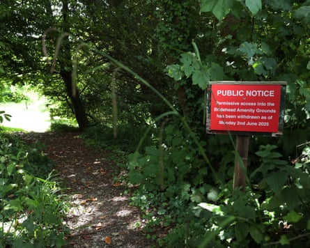

Heaven only knows what Thomas Hardy would have made of it. On Saturday, protesters will arrive at the Bridehead estate in Dorset, hop across a low stone wall and take part in a “peaceful trespass” to express their anger and sadness at the loss of access to a spot in the sort of landscape Hardy wrote about so evocatively.
They will picnic near a lake, listen to songs and some will join a writing workshop, while drawing attention to the closure of a permissive path that local people and visitors have used for generations.
Last year the family that had lived there for more than two centuries sold the estate, in the village of Littlebredy, which includes a manor house and thatched cottages, to the Oxfordshire-based Belport, which specialises in acquiring and managing rural property.
To the consternation of people who loved visiting the grounds, last month the path to the lake and a tumbling waterfall, which was used as a crime scene in the television drama Broadchurch, was closed.
The campaign group Right to Roam has taken up the case and has organised the trespass.
The new owners of the estate have stopped access to the grounds.Photograph: Martin Godwin/The Guardian
Lewis Winks, of Right to Roam, said: “We’ll be celebrating the connection people have had with the Bridehead estate for decades. We’ll be peacefully enjoying the grounds just as people have done for generations and drawing attention to the fragility of permissive access when landowners can withdraw that permission just at a whim.
“We’re encouraging the [UK] government to protect existing access and to extend access to the countryside, particularly in places like Dorset where there’s a real lack of meaningful access to nearby countryside for people. This isn’t about a mass trespass; this is about sort of asserting a historic customary right.”
People have expressed dismay at the loss of access, including some who have scattered ashes of loved ones there and cannot now get back to the spot.
The visitors’ book in the village church, St Michael and All Angels is being used as a place to record their displeasure. One said: “We came too late. We’ve missed a treat.” Another said: “It’s a tragedy it won’t be shared with those that value it so much.”

St Michael and All Angels church in Littlebredy. Its visitors’ book is being used to record displeasure at the loss of access.Photograph: Martin Godwin/The Guardian
Kevan Manwaring, a university lecturer in creative writing, to planning to join the trespass. He said: “Bridehead is a very special place that deserves to be open to the public. They have prevented people from going there. I think this is illustrative of a wide problem about public access to nature in England . It’s not just a nimby-ish issue.”
Hardy knew this area well, with one of the main characters in his novel Jude the Obscure named Sue Bridehead. Manwaring said he liked to think the author would have been sympathetic to the cause: “His novels depict an unenclosed England, written with a post-enclosure longing. His Egdon Heath [which features prominently in The Return of the Native] was based upon the heathland that stretched from his family cottage at Higher Bockhampton to Poole and Bournemouth. It would be very difficult to walk that now.”
During the trespass, Manwaring plans to read a poem he has written about the River Bride, which rises beneath the artificial lake at Bridehead: “You have shaped the land and lives/with your steady, gentle, Brydian ways.”
Some worry about the future of the estate cottages. One household has left so their home could be used as an estate office. A long-term resident told the Guardian this week that there was a “fog” around what would happen next.
Ahead of the protest, Belport said it may reopen the path if “issues” could be addressed.
A spokesperson said: “Having bought the Bridehead estate, our principal focus is to orchestrate a sequence of upgrade works to each of the estate properties in Littlebredy, which will bring them up to current and anticipated minimum energy and safety standards required of all landlords.”
It said one resident “was asked to vacate via the vendor”, adding: “This was to provide an estate office and accommodation for staff.” There were no plans for any other evictions, it said.
“In a similar vein, access to some small areas of the estate has been temporarily suspended pending a health and safety review of access routes, trees and open water. If we can address any issues sufficiently, we intend to reopen the area to the public.”